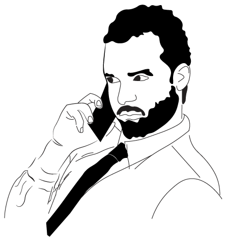

About
“Ciclo de Conversas Design + Multimédia” consists of a series of talks that take place annually during,
organised within the scope of the Bachelor and Master courses in Design and Multimedia at the Faculty of Science and Technology of the University of Coimbra. This year, 2024, it will take place in April, divided into four sessions every Wednesday afternoons, in the auditorium of the Science Museum in Coimbra. The conferences will be open to the general public and free entry. This public dissemination action outside the Facult aims to, not only raise awareness to the work of different professionals whose work is widely known, but also contribute to the dissemination of the Design and Multimedia course. The program is constituted by guests of areas (Graphic Design, Interaction Design, Web Design, Architecture, Design Theory, Art, Illustration, etc.).
Speakers

Sessão 7 de abril, Bráulio Amado
Bráulio Amado is a Portuguese graphic designer born in 1987, living in Brooklyn, New York, USA. He is currently an Art Director, Designer and Illustrator at Bloomberg Businessweek magazine. In the past he has worked at Pentagram NY, Red Antler, and has been commissioned by The New York Times Magazine, Penguin, Twitter, among others.
Sessão 14 de abril, Camila Nogueira
Camila Nogueira is a Portuguese artist currently residing in the picturesque city of Porto, Portugal. Graduating in 2015, she has since pursued a career as a freelancer, engaging in various commercial illustration projects while also dedicating time to her personal artistic endeavors.
Her current focus revolves around the reinterpretation of places with a magical aura, crafting surreal worlds that captivate her imagination. Embracing the concept of life as a beautiful mystery filled with challenges, Camila uses her art to guide people towards the enchanting aspects, encouraging them to perceive life through a dreamy lens.

Sessão 21 de abril, Susana Carvalho
Susana Carvalho studied communication design at the Faculty of Fine Arts at the University of Lisbon
(FBAUL). In 2004 she moved to the Netherlands to complete the TypeMedia MA programme at the Royal Academy of Art in The Hague (KABK). Recently her interest in education led her to pursue a MEd in Education in Arts at the Piet Zwart Institute in Rotterdam where she researched the potential of space as a pedagogical tool in the graphic design classroom. She founded Atelier Carvalho Bernau in 2005 with her partner Kai Bernau.
Sessão 28 de abril, Rejaine Dal Bello
Rejane Dal Bello AGI Member an award-winning designer since 2022 with a history of iconic work. She has 20 years of experience in graphic design and branding, including stints at renowned agencies such as Wolff Olins (UK) and Studio Dumbar (NL), and recently she wrote the ‘Citizen First, Designer Second‘ book published by Counter-print.